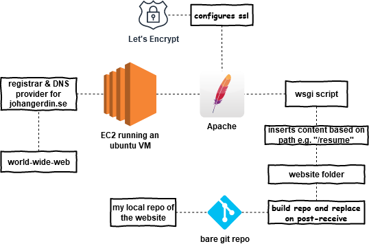

Terrain Generation
With this application, I'm trying to explore how to generate interesting terrain. The terrain should both feel "huge" and at the same time be nice to look at up close. It is still a WIP. It's made as much as possible from scratch using C/C++ and OpenGL. Shout-outs to Eren Katsukagi, Dear ImGui and Sean Barret's stb_image.h.
Heightmap Renderer
"Heightmap Renderer" is an application I made to render heightmaps from Lantmäteriets öppna data. I tried to do as much as possible from scratch (i.e. no 3rd party or even stdlib libraries). I ended up using Dear ImGui to create the GUI and Sean Barret's stb_image.h to load textures, along with some stblib procedures like "memcpy". The application can render with either OpenGL or DirectX11.
This website

This website is currently hosted on Github. I used to host this website on AWS but right now I'm looking for a cheaper option, so Github Pages is a good temporary place for this site. I have replaced the old setup by a Python build script that inserts content into a "main" html file. Feel free to take a look at the Github repository if you are interested in how this works.The server setup might change from the one I had on AWS when I migrate to a new hosting option, but I'll briefly describe the way it worked here. An EC2 instance hosts a Linux distro (arch, ubuntu...) VM which runs an Apache server. When a user requests the site from the server it executes a wsgi script which returns an html template with content based on the path in the url. For example, /portfolio inserts the content of file johangerdin.se/static/portfolio.html into the template. Let's Encrypt is used to configure SSL. There is a bare git repository with a post-receive hook that builds and replaces the served website folder with new changes.
The website itself is built in HTML/CSS/Javascript with some JQuery. It has a desktop and a mobile view and should work on most devices.